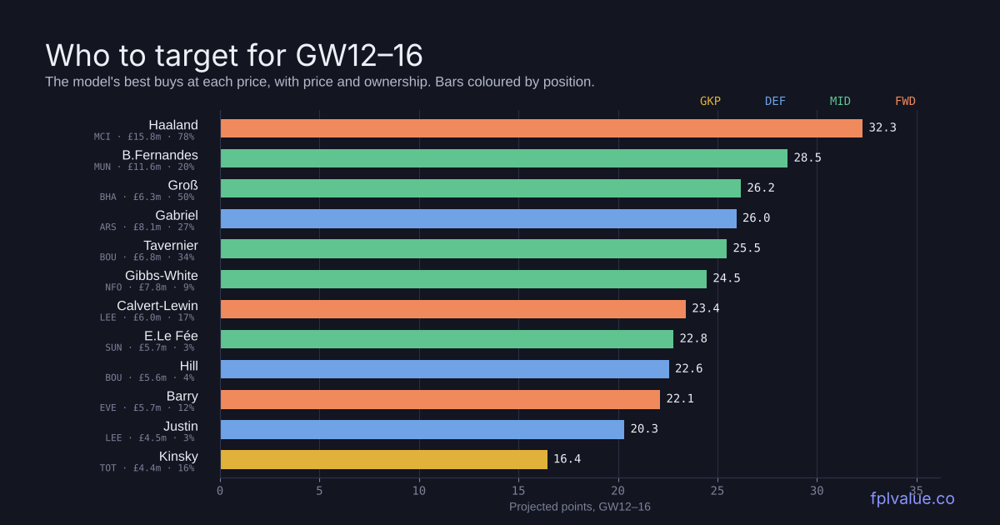

Who to target for GW12–16: best buys, differentials and sells
The GW12 deadline is Friday 27 November at 18:30. This post brings together the value report, the form changes and the fixtures into one list: the model's best players to buy for the next five gameweeks, the cheaper and less-owned options, the popular players to sell, and the captaincy call. Projections are as of 24 November, with FPL's injury flags applied.

The GW12 captain
Haaland isn't the model's captain this week. He's away at Arsenal, the best defence in the league, and projects 4.9. Three players are ahead of him:
| Player | Fixture | Owned | GW12 |
|---|---|---|---|
| B.Fernandes MUN | BRE (H) | 20% | 6.0 |
| Groß BHA | NEW (H) | 50% | 5.5 |
| Gibbs-White NFO | CHE (H) | 9% | 5.2 |
| Mbeumo MUN | BRE (H) | 18% | 5.0 |
| Gabriel ARS | MCI (H) | 27% | 5.0 |
| Haaland MCI | ARS (A) | 78% | 4.9 |
Fernandes is the model's pick, at home to Brentford, and his involvement has gone up in the last four games. Be aware that the model has made him captain twice this season and he scored 1 and 0. If you don't own him, Groß at home to Newcastle is the sensible choice. Brighton have the best attacking fixture of the week, and half of managers already own him. Haaland is still the safe pick, because 78% of managers own him. But the model has him 1.1 points behind Fernandes, and City have taken four points from their last five games.
The best buys by position
These are the model's projected points for GW12–16, with current prices and ownership. Highlighted players are the best value at their position.
| Player | Team | Price | Owned | GW12–16 |
|---|---|---|---|---|
| Goalkeepers | ||||
| Trafford | LEE | £5.1m | 8% | 17.8 |
| Verbruggen | BHA | £4.7m | 25% | 16.9 |
| Kinsky | TOT | £4.4m | 16% | 16.4 |
| Defenders | ||||
| Gabriel | ARS | £8.1m | 27% | 26.0 |
| De Cuyper | BHA | £5.5m | 50% | 22.9 |
| Hill | BOU | £5.6m | 4% | 22.6 |
| Silva | BOU | £5.1m | 4% | 22.2 |
| Van Hecke | TOT | £5.2m | 19% | 21.7 |
| Justin | LEE | £4.5m | 3% | 20.3 |
| Midfielders | ||||
| B.Fernandes | MUN | £11.6m | 20% | 28.5 |
| Groß | BHA | £6.3m | 50% | 26.2 |
| Tavernier | BOU | £6.8m | 34% | 25.5 |
| Gibbs-White | NFO | £7.8m | 9% | 24.5 |
| Palmer | CHE | £9.8m | 27% | 23.8 |
| Le Fée | SUN | £5.7m | 3% | 22.8 |
| Forwards | ||||
| Haaland | MCI | £15.8m | 78% | 32.3 |
| Isak | LIV | £9.3m | 27% | 24.3 |
| Calvert-Lewin | LEE | £6.0m | 17% | 23.4 |
| Barry | EVE | £5.7m | 12% | 22.1 |
| N.Jackson | AVL | £7.3m | 36% | 22.1 |
Haaland is still the best player in the game over five weeks by almost four points. City's run after GW12 is Leeds, Brentford, Chelsea and Hull. Keep him.
Hill is the Bournemouth defender to buy now. He's just behind De Cuyper for 4% ownership, and Bournemouth have been the best team in the league over the last five games. Hull and Coventry come to Bournemouth in GW14 and GW16. Silva is the £0.5m-cheaper option and projects almost the same.
Calvert-Lewin and Barry are the two forwards to pair with Haaland. Calvert-Lewin projects only 0.9 behind Isak for £3.3m less, and Leeds have two home games in the first three. Barry is the cheaper option, though Everton's fixtures are poor.
Groß is the midfielder everyone should own. Some of his points this season have been luck, but he's still second only to Fernandes for the next five, at about half the price.
Differentials: under 10% owned
| Player | Team | Price | Owned | GW12–16 | Why |
|---|---|---|---|---|---|
| Gibbs-White | NFO | £7.8m | 8.8% | 24.5 | 5.38 xGI and one goal. Forest are the team most likely to turn it around. |
| Le Fée | SUN | £5.7m | 3.1% | 22.8 | 5.86 xGI, the fourth-most of any midfielder, for £5.7m. |
| Hill | BOU | £5.6m | 4.3% | 22.6 | The best-projected defender outside Arsenal and Brighton. |
| Wirtz | LIV | £7.4m | 9.6% | 21.8 | His xGI per 90 has more than doubled since GW7, and Liverpool's next six are all easy. |
| Justin | LEE | £4.5m | 2.6% | 20.3 | The cheapest regular in the league's best defence over the last five. |
| Madueke | ARS | £6.2m | 0.7% | 20.4 | Has started every game since GW8, with Saka out until 20 December. |
| McAtee | NFO | £5.5m | 0.1% | 19.4 | No goals from 3.05 xGI. The cheap way into Forest. |
Who to sell
| Player | Team | Owned | GW12–16 | Why |
|---|---|---|---|---|
| Cherki | MCI | 32% | 14.3 | Five goals from 2.0 xG, 20 minutes in GW11, and 58th among midfielders. |
| João Pedro | CHE | 28% | 1.3 | Still out with a thigh injury and no return date. |
| Gvardiol | MCI | 20% | 11.5 | 12 minutes in GW11 and 67th among defenders. |
| Tarkowski | EVE | 18% | 5.0 | Suspended until 13 December after his red card. |
| Hall | NEW | 16% | 15.8 | A 75% flag, and 29th among defenders. |
| Thiago | BRE | 7% | — | Suspended until 5 December. |
Raya (46% owned) is a 50% flag with a shoulder injury, and the model has him at 1.8 for GW12. He's the highest-scoring keeper this season, so don't sell him for one week. Just make sure your second keeper plays. Kinsky (£4.4m) is the cheapest good option.
Rogers (55%) and Mbeumo (18%) are softer cases. Rogers has scored more than his chances and his involvement has dropped, but he's still 12th among midfielders. Mbeumo's numbers have halved in the last four games. Neither is an urgent sell, but if you need the money for Groß or Gibbs-White, these are where to get it.
Sell any United defenders. Their xG against over the last five games is the worst in the league, and they go to Arsenal in GW16.
Method: projected points are from the projection model as of 24 November (data refreshed after GW11), with FPL's injury flags applied. Prices and ownership are from the FPL API on the same day. Fixture difficulty is from the team model, as on the fixture planner. The numbers and chart are generated by blog/review.py.